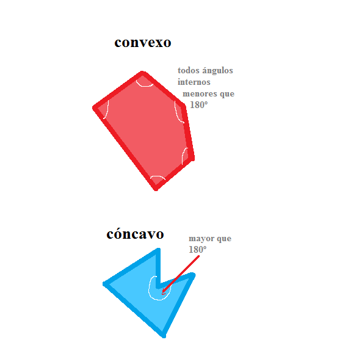
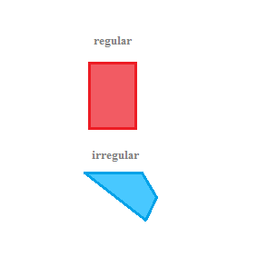
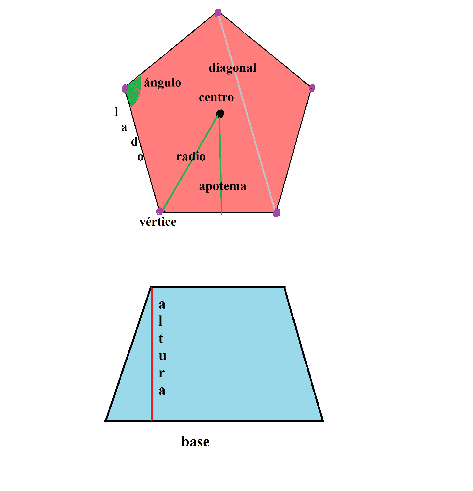

Polígonos
Un polígono es una región de un plano delimitada por segmentos rectos. El término polígono puede traducirse del griego como "muchos ángulos". Un polígono tiene todos sus lados rectos y además esos lados forman una figura cerrada.
Clasificación de los polígonos
A los polígonos se los puede clasificar en base a: sus lados, sus ángulos, o a sus lados y ángulos.
Clasificación de polígonos según el número de lados
- Triángulo: 3 lados
- Cuadrilátero: 4 lados
- Pentágono: 5 lados
- Hexágono: 6 lados
- Heptágono: 7 lados
- Octógono: 8 lados
- Eneágono: 9 lados
- Decágono: 10 lados
- Endecágono: 11 lados
- Dodecágono: 12 lados
Clasificación de polígonos según sus ángulos
- Polígonos convexos: todos sus ángulos interiores son menores que 180o
- Polígonos cóncavos: al menos uno de sus ángulos internos es mayor que 180o

Clasificación de polígonos según su regularidad
- Polígonos regulares: son aquellos que tienen todos sus lados y ángulos iguales.
- Polígonos irregulares: son aquellos que tienen aunque sea un lado ó un angulo distinto al resto.

Elementos de un polígono

- Centro: punto a partir del cual todos los lados y ángulos están a la misma distancia
- Diagonal: es la recta que une dos vértices no consecutivos
- Apotema: es el segmento que va desde el centro del polígono hacia cada uno de los centros de cada lado
- Radio: es el segmento que va desde un vértice al centro del polígono
- Base: es el lado inferior del polígono
Área de polígonos regulares
El área de todo polígono regular se calcula como:
Área = perímetro . apotema / 2